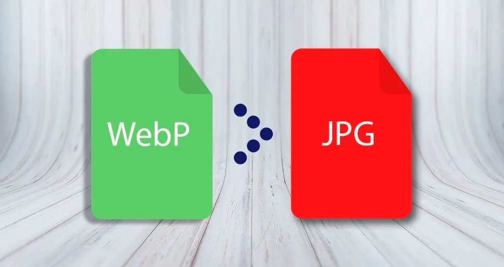

png
Se creó con el objetivo de superar en rendimiento al archivo GIF y no solo ofrece una compresión sin pérdida de datos, sino también una paleta de colores mucho más variada y brillante.

Se creó con el objetivo de superar en rendimiento al archivo GIF y no solo ofrece una compresión sin pérdida de datos, sino también una paleta de colores mucho más variada y brillante.
con el objetivo de crear un formato comprimido de imagen para fotografías.

Un GIF es una imagen animada hecha a partir de la unión de varias imágenes en una de sola que se van reproduciendo como un vídeo en forma de bucle.

WebP es un formato de imagen moderna que proporciona compresión con y sin pérdida de información para las imágenes más pequeñas y enriquecidas en la web.
SVG o Gráficos Vectoriales Escalables es un estándar web para definir gráficos basados en vectores en páginas web.